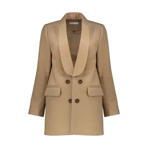

پالتو زنانه مدل zara کد M001
ارسال رایگان برای اعضای دیجی پلاس می باشد
جنس پارچه فوتر
پارچه های فوتر که با نام پارچه نمد نیز شناخته می شوند، نوعی بافت سنتی دارند که با پشم تهیه می شوند. در کشور فرانسه به این نوع پارچه ها فوتر گفته می شود. پارچه های فوتر ضخامت زیادی دارند و معمولا از پشم گوسفند تهیه می شوند، در نتیجه، این پارچه ها از خانواده پارچه های پشمی محسوب می شوند که به دلیل الیاف ضخیمی که دارند برای تهیه انواع پوشاک زمستانه مناسب هستند.به سبد خرید شما اضافه شد
| نام محصول | قیمت | zaraM001 | 769,000,000 |